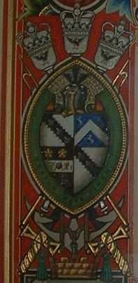

The Right Honourable Robert Durning Holt, 1893 arms.
Robert Durning Holt was an English cotton-broker and a key figure in the Liberal party. He was Mayor of Liverpool and the first Lord Mayor of Liverpool between 1892–1893. His family’s use of these ancient arms (derived from the Holts of Stubley, dating back to the 14th century) served to link their modern commercial success with a long-standing landed heritage in Lancashire.

Holt Family Coats of Arms Explained
The arms have four quarterings:
1st & 4th Quarters: Holt
- Description: Argent, on a bend engrailed sable, three fleurs-de-lis of the first.
- Visual: The silver/white background with the black diagonal "scalloped" band and three silver lilies.
- Significance: These represent the primary Holt paternal line.
2nd Quarter: Durning
- Description: Azure, a chevron between three antelopes (or stags) salient argent.
- Visual: The blue background with the white "V" shape (chevron) and three white jumping animals.
- Significance: This represents the Durning family. Robert Durning Holt's mother was Emma Durning. In heraldry, when a mother is an "heraldic heiress" (meaning she had no brothers to carry on the name), her son can quarter her arms with his father's.
3rd Quarter: Potentially Gristlehurst or a Marital Connection
- Description: This quarter is a bit more complex. It appears to feature a horizontal band (a fesse or a bar) with symbols on it, and what looks like two gold stars (mullets) above it.
- Significance: In many Holt family scrolls, the third quarter is often used for the Sumner or Gristlehurst branches. However, looking at the image, it specifically appears to be a variation of the Lawndy or Durning-related ancestral line. Given the "RD Holt" context, this is often the arms of a specific maternal grandmother or an earlier Durning ancestor.
Additional Features in the Image
- The Crest: Above the helmet, you can see the Pheon (the black spearhead), which is the classic Holt crest.
- The Surround: The shield is encircled by a green garter, which, given Robert Durning Holt’s status as Lord Mayor, likely contains a civic or honorary motto.
- The External Ornaments: The three crowns at the top and the crossed axes/maces at the bottom are Civic Insignia. They are not part of the family coat of arms itself but represent his office as Lord Mayor of Liverpool. The "M" at the very bottom likely stands for "Mayor" or "Municipality."